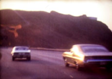

|
JOHANNES KARL /ED WATER
Jack | 2009 | 6'29''
Format: Super-8 auf DV
www.ed-water.de
Fake-Documentary über den Künstler Jack Spencer, der in den 60er und 70er Jahren eine eigen Kunstgruppe in Amerika gründete, zu der aus dem ganzen Land Leute strömten. Er wurde mit seiner Idee von dem Zusammenleben als Kunst, oder der Gemeinschaft als Kunstwerk von den Feuilletons als großer Gegenspieler zur Warhol’schen Produktkunstidee gefeiert wurde. Die Story ergibt sich aus einem Interview mit Steve, welcher damals von
Kanada aus zu der Gruppe zog. Im Film erzählt er seine Geschichte und die
des berühmten Jack, während Super8-Bilder die Geschichte illustrieren. In Wahrheit handelt es sich jedoch bei den Aufnahmen um auf dem Flohmarkt erworbene alte Urlaubsfilme, die, neu geschnitten, die fiktive Geschichte von Jack Spencer erzählen.
Johannes Karl, geboren 1982 in Dachau. Von 2002 bis 2008 Studium an der Kunstakademie München bei Prof. H. Sauerbruch und S. Dillemuth. Lebt und arbeitet in München und Feldgeding. Er ist Künstler der 2009 in München gegründeten Platform 3. Sein Alias ist Ed Water.
Ausstellungen (Auswahl): 2005 | Invasion 3, Pasinger Fabrik | Tricks, Galerie Cadutta Sassi | 2006 die Neuen, Galerie der KVD | halb und halb, Schloss Dachau | 2007 Walden 3 (mit k2ao), Kunsthaus Dresden | Shifting Borders - Overlapping Fields, Maejima Art Center | 2008 War craft besser, Haus 10 in FFB | Karfreitagskunstausstellung, Atelier Lothringer 13 | Schöner Wohnen, Galerie der Akademie München | Totenwache (Im Rahmen des k2ao-Beitrags), Favoriten08, Lenbachhaus, München
zurück
|